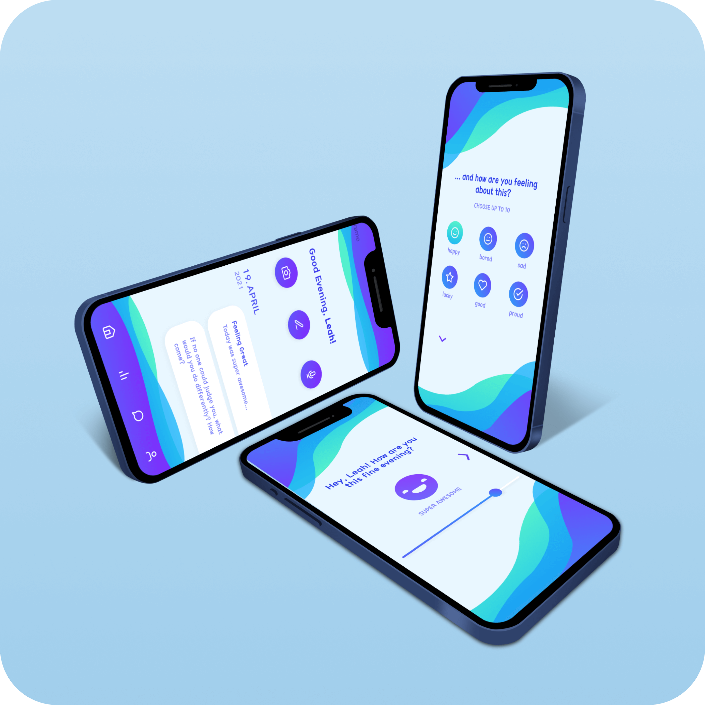

Reflectly Redesign
Using Figma and After Effects, I rebranded and redesigned the micro interactions and design of the app Reflectly for my Interaction Design class.
What is Reflectly?
Reflectly is a personal journal driven by AI to help you deal with negative thoughts and increase positivity. Reflectly allows the user to vent their thoughts and feelings to improve their mood and practice mindfulness. The users write down how they feel each day in their own mood diary.
The goal of this project was to rebrand Reflectly and redesign the interface, key task (creating a journal entry), and micro-interactions to match the rebrand.
Understanding the User
NEEDS
- help deal with stress
- practice mindfulness
- reflect and put life into perspective
Rebranding Research
After creating a user persona, I did my initial brainstorming on how I wanted to rebrand Reflectly's brand identity.

Since Reflectly's main purpose is to improve the user's mental state and stress levels, I wanted the interface's colors to feel calming and refreshing. After exploring color theory, I chose purples, greens, and blues because they are known to be relaxing colors.

Regarding typography, I wanted users to feel comfortable with the app, so I chose the font 210 Hayanpubil for its friendly and conversational look.
Lastly, I had to brainstorm some possible names for the new brand. Out of all the names I brainstormed, "Refresh" stood out to me because it felt representative of how I wanted the app to wash away the users' worries and refresh them.
Sketches
Next, I began ideating the possible wireframes and microinteractions.

Mid-Fidelity Wireframes
To get a more accurate and detailed idea of the design, I created grayscale wireframes for every required page, mapping out the final page layouts.

High Fidelity UI
After putting the colors in, I created my High Fidelity wireframes.
Final Prototype
Lastly, I added microinteractions in AfterEffects. Enjoy the final product!